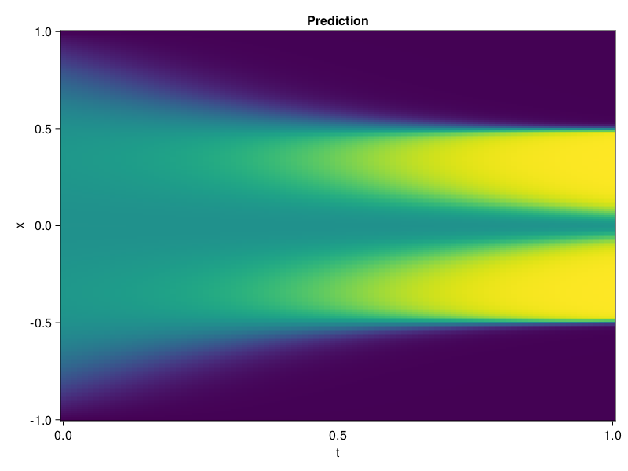

Allen-Cahn Equation with Sequential Training
In this tutorial we are going to solve the Allen-Cahn equation with periodic boundary condition from $t=0$ to $t=1$. The traning process is split into four stages, namely $t\in [0,0.25]$, $t\in [0.0,0.5]$, $t\in [0.0,0.75]$ and $t\in [0.0, 1.0]$.
using ModelingToolkit, IntervalSets
using Sophon
using Optimization, OptimizationOptimJL
@parameters t, x
@variables u(..)
Dₓ = Differential(x)
Dₓ² = Differential(x)^2
Dₜ = Differential(t)
eq = Dₜ(u(x, t)) - 0.0001 * Dₓ²(u(x, t)) + 5 * u(x,t) * (abs2(u(x,t)) - 1.0) ~ 0.0
domain = [x ∈ -1.0..1.0, t ∈ 0.0..0.25]
bcs = [u(x,0) ~ x^2 * cospi(x),
u(-1,t) ~ u(1,t)]
@named allen = PDESystem(eq, bcs, domain, [x, t], [u(x, t)])\[ \begin{align} - 0.0001 \frac{\mathrm{d}}{\mathrm{d}x} \frac{\mathrm{d}}{\mathrm{d}x} u\left( x, t \right) + 5 \left( -1 + \left|u\left( x, t \right)\right|^{2} \right) u\left( x, t \right) + \frac{\mathrm{d}}{\mathrm{d}t} u\left( x, t \right) =& 0 \end{align} \]
Then we define the neural net, the sampler, and the training strategy.
chain = FullyConnected(2, 1, tanh; hidden_dims=16, num_layers=4)
pinn = PINN(chain)
sampler = QuasiRandomSampler(500, (300, 100))
strategy = NonAdaptiveTraining(1, (50, 1))
prob = Sophon.discretize(allen, pinn, sampler, strategy)OptimizationProblem. In-place: true
u0: ComponentVector{Float64}(layer_1 = (weight = [-0.42406952381134033 -0.8659049272537231; -0.9283281564712524 -1.8386147022247314; … ; -0.812555193901062 -0.08438539505004883; 2.0256567001342773 0.3892641067504883], bias = [0.0; 0.0; … ; 0.0; 0.0;;]), layer_2 = (weight = [0.6819397807121277 0.15503230690956116 … 0.5961610674858093 0.5471709966659546; 0.656266987323761 -0.15956945717334747 … 0.360405296087265 0.4133691191673279; … ; -0.13816161453723907 -0.5053970813751221 … 0.23017263412475586 -0.0716027095913887; -0.2418396770954132 0.12141267210245132 … 0.5358206033706665 0.6847147941589355], bias = [0.0; 0.0; … ; 0.0; 0.0;;]), layer_3 = (weight = [-0.0916317030787468 -0.3901600241661072 … 0.5315230488777161 -0.09772654622793198; 0.30074596405029297 0.00747866602614522 … 0.23515887558460236 -0.4232039451599121; … ; 0.09819172322750092 -0.6467788219451904 … 0.6599735021591187 -0.017068812623620033; -0.6335939764976501 -0.17055082321166992 … 0.4248884320259094 -0.5096001029014587], bias = [0.0; 0.0; … ; 0.0; 0.0;;]), layer_4 = (weight = [-0.4373043179512024 0.17700639367103577 … 0.6606813669204712 -0.542635977268219; -0.7192865610122681 -0.16772028803825378 … 0.6239898800849915 -0.053684674203395844; … ; -0.5898985266685486 0.21919721364974976 … 0.18080882728099823 0.2274063676595688; 0.6900058388710022 0.4960787892341614 … -0.0940057560801506 -0.06431365758180618], bias = [0.0; 0.0; … ; 0.0; 0.0;;]), layer_5 = (weight = [0.283527135848999 0.1361672282218933 … -0.5227465629577637 0.6073400378227234], bias = [0.0;;]))We solve the equation sequentially in time.
function train(allen, prob, sampler, strategy)
bfgs = BFGS()
res = Optimization.solve(prob, bfgs; maxiters=2000)
for tmax in [0.5, 0.75, 1.0]
allen.domain[2] = t ∈ 0.0..tmax
data = Sophon.sample(allen, sampler)
prob = remake(prob; u0=res.u, p=data)
res = Optimization.solve(prob, bfgs; maxiters=2000)
end
return res
end
res = train(allen, prob, sampler, strategy)u: ComponentVector{Float64}(layer_1 = (weight = [-1.0485420653007398 -0.5674605941439747; -0.6197471270447993 -1.1202804885538202; … ; -0.8477867529752352 -0.08521825360802662; 2.671289663085777 0.3663714809224279], bias = [0.7652434573988115; 1.2132982160459007; … ; -0.5622878121400899; -0.5678918589558458;;]), layer_2 = (weight = [0.6248838882002163 0.015303830957334879 … 0.5433516005090666 0.5640085025700715; 0.6736268315201093 0.027430522436979507 … 0.4176231346588235 0.41378899046888545; … ; -0.23962309302898996 -0.18185268479492955 … 0.08127450142932155 0.42989449774625416; -0.12380231887653485 -0.16315132240734778 … 0.7066777765333474 0.9809874789707037], bias = [0.19105374726086416; 0.4205366945075582; … ; 0.046540294207563795; -0.03592087244923752;;]), layer_3 = (weight = [0.6781069066135611 -0.4973173131907732 … 0.37068445941360756 0.0730601190077354; 0.5453181343593004 0.11047839458025407 … 0.49788919092281836 -0.42332440397334986; … ; 0.6361479183035352 -0.690099500322644 … 0.6804890375040071 0.2137570029474177; -0.47100740400774904 -0.4884452941992892 … 0.7887560214456087 -0.31246838614681804], bias = [-0.3276227323524872; -0.15063495139646105; … ; -0.077444424553202; -0.6193052551159401;;]), layer_4 = (weight = [-0.30286642955963805 0.09007779524665954 … 0.8341542350331853 -0.5244655087809901; -1.1670883621207062 -0.2316018688656467 … 0.33855103806668047 -0.443816854825234; … ; -0.5251404824976926 -0.1644687009545032 … -0.10493461051342669 -0.37562342779816393; 0.9871125615806794 0.5626266522280816 … 0.17808547784202688 -0.681831032772033], bias = [-0.004294621767526228; -0.06212405284167516; … ; 0.45403028865435985; 0.6333253387477252;;]), layer_5 = (weight = [-0.008363408747394517 0.3311502823546385 … -0.7657098949694758 0.6089420711033937], bias = [-0.5015438011331975;;]))Let's plot the result.
using CairoMakie
phi = pinn.phi
xs, ts = [infimum(d.domain):0.01:supremum(d.domain) for d in allen.domain]
axis = (xlabel="t", ylabel="x", title="Prediction")
u_pred = [sum(pinn.phi([x, t], res.u)) for x in xs, t in ts]
fig, ax, hm = heatmap(ts, xs, u_pred', axis=axis)